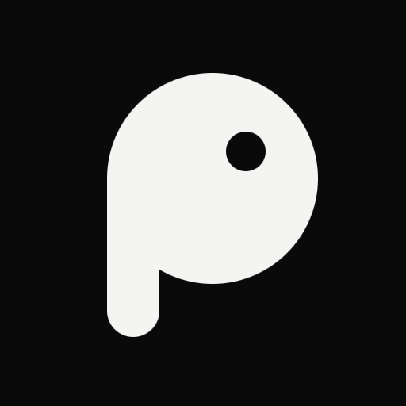

{{ winTitle }}
{{ winTitle }}
remove
crop_square
close

p
i
u
.
iniciando o nó local
piu.
{{ auth.kicker }}
{{ auth.title }}
{{ auth.sub }}
{{ s.n }}
{{ s.pre }} {{ s.b }}
Manter conectado neste computador
Chaves guardadas no {{ keychain }}, cifradas.
novo código em {{ qrLeft }} sWi-Fi local · Bluetooth
smartphone
Pixel 7a · Cardeal quer conectar
Confira se o celular mostra o mesmo código
{{ w.v }}
Nome de exibição
Seu nome será derivado da chave
Anônimo · 7F3A
keyAs chaves nascem neste computador e não saem dele. Depois você pode conectar o celular à mesma identidade.
{{ workPctLabel }}
check
{{ r.icon }}
{{ r.label }}
{{ r.state }}
{{ workNote }}
{{ w.n }}
6 nós
{{ tx.chatsH }}
{{ me.icon }}{{ me.label }}
search
{{ kSearch }}
{{ c.initials }}
{{ c.name }}
{{ c.time }}
{{ c.preview }}
{{ c.unread }}
Nenhuma conversa aqui ainda
{{ chat.initials }}
{{ chat.name }}
{{ chat.sub }}
lockCifrado de ponta a ponta. Clique numa mensagem para ver a rota.
{{ m.text }}
{{ m.statusLabel }}·{{ m.time }}{{ m.statusIcon }}
{{ m.text }}
{{ m.sender }}
{{ m.text }}
{{ m.time }}
schedule_send{{ chat.first }} está fora de alcance
A mensagem fica guardada no nó Galpão e é entregue quando surgir uma rota. Expira em 47 h.
{{ chat.viaIcon }}{{ chat.via }}
{{ enterHint }}
Somente administradores publicam
{{ chat.via }}
ROTA DA MENSAGEM
{{ n.via }}
{{ n.n }}
{{ n.k }}
{{ chat.initials }}
{{ chat.name }}
{{ chat.sub }}
CÓDIGO DE SEGURANÇA
{{ g.v }}
Compare com o aparelho de {{ chat.first }}, pessoalmente ou por outra via.
MENSAGENS TEMPORÁRIAS
{{ tx.settingsH }}
{{ pg.title }}
{{ pg.desc }}
{{ me.initials }}
Anônimo · 7F3A
1,2 GB
cifrado neste computador
{{ u.l }} · {{ u.w }}
{{ sec.title }}
{{ r.icon }}
{{ r.name }}
{{ r.desc }}
{{ r.value }}
{{ k }}
{{ w.n }}{{ w.w }}
{{ tx.walletH }}
lunes:7f3a…c19e
SALDO DISPONÍVEL
{{ bal.shown }}
LUNES
{{ bal.fiat }}{{ bal.locked }} · bônus em validação
MOVIMENTAÇÕES
{{ t.icon }}
{{ t.t }}
{{ t.d }}
{{ t.st }}
{{ t.v }}
{{ sheetTitle }}
LUNES
Para{{ sendTo }}
Disponível{{ avail }} LUNES
Taxa0,01 LUNES
Liquidaçãoquando a malha alcançar a Mainnet
Valor maior que o saldo disponível
north_east
{{ sentLabel }}
Assinado e enviado pela malha. Liquida quando um nó alcançar a Mainnet.
lunes:7f3a91c2…a912c19econtent_copy
Funciona sem internet: o pagamento fica registrado e liquida quando a malha alcançar a Mainnet.
Créditos de rede
7 dias
+15,10
LUNES por retransmitir
{{ b.d }}
Este computador retransmite com até 5 Mbps. Ajuste em Ajustes → Rede.
{{ note.initials }}
{{ note.title }}
agora
{{ note.body }}
{{ toast.icon }}{{ toast.text }}
{{ dlg.icon }}
{{ dlg.title }}
{{ dlg.body }}